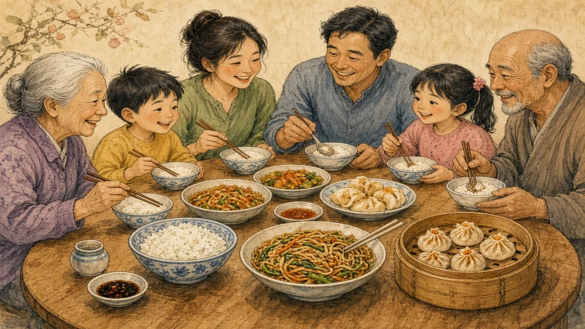

Rice, noodles, kimchi and chopsticks — but the food of China, Japan and Korea is more varied than the stereotype, and it keeps changing.
East Asia · Food & daily life · Lesson 3 of 7
🌍 World map · ← Around the World: East Asia · 🌱 Easier version (A2) · ← Gifts, Face and Red Envelopes · Exam Hell: Do East Asian Students Only Study? →

Each new word is hidden in a sentence. Read it aloud and say what you think the bold word means from the rest of the sentence — then reveal it and see how close you were.
Read each part. After it, there's a quick comprehension check (try the questions from memory first), then one thing to discuss.
China's regional cuisines are so different that people often speak of “eight great cuisines”. Sichuan food is hot and numbing with chilli and Sichuan pepper, while Cantonese food is lighter and famous for dim sum. In the north, wheat is the staple, so people eat dumplings, noodles and steamed buns, while rice dominates in the south. A visitor who eats in Chengdu, Guangzhou and Beijing can feel they have been to three different countries.
1. Why do people speak of “eight great cuisines” in China?
2. What is the usual staple in northern China?
1. Because the regional cuisines are so different.
2. Wheat — in dumplings, noodles and buns.
Chopsticks are used in China, Japan and Korea, but they are not identical. Chinese chopsticks are long with blunt ends, Japanese ones are shorter with pointed tips, and Korean ones are usually flat and made of metal. In 2013 UNESCO added both Japan's traditional cuisine, washoku, and the Korean tradition of making kimchi to its heritage list. Kimchi, fermented vegetables often cooked with chilli, appears at almost every Korean meal.
1. Which country usually uses flat metal chopsticks?
2. What is kimchi?
1. Korea.
2. Fermented vegetables, often cabbage with chilli.
Food also changes. In Japan, rice consumption per person has fallen by more than half since the 1960s, as bread, pasta and meat have become common. Chinese restaurants abroad often serve dishes adapted to local tastes: General Tso's chicken was invented in the USA, and the fortune cookie is not a Chinese tradition. Ask for either in Chengdu or Guangzhou, and you may get a puzzled look. What people call “Chinese food” in one country can be very far from what people eat in China.
1. What has happened to rice consumption in Japan?
2. Is the fortune cookie a Chinese tradition?
1. It has fallen by more than half since the 1960s.
2. No — it was developed in the USA.
A stereotype and the reality rarely match. This lesson's grammar gives you the structure to describe the difference.
Complete each sentence about this topic.
1. Japanese people eat much more rice than they do now.
2. When I was a child, my grandmother make dumplings every New Year.
3. Korean families make kimchi together every autumn.
1. used to
2. would (or used to)
3. would (or used to)
1. I didn't like spicy food, but now I do.
2. Did you eat rice every day when you were young?
3. When we visited China, we try a different noodle dish each day.
1. use to
2. use to
3. would (or used to)
Hold on to this — you'll need it in the Speak tab.
The picture in people's heads often comes from the first restaurants abroad. They were opened by migrants from a few regions — especially southern China — who adapted recipes to local customers and ingredients. Those dishes became “the” food of a whole region. Meanwhile, home cooking in East Asia is far more varied than any restaurant menu abroad, and it changes with every generation.
This is the heart of the lesson — do all of it out loud. The timer is there to keep you going: fill the time with detail rather than escaping it.
Explain how East Asian food is more varied and more changeable than the stereotype, as if to a friend who thinks it is all rice and noodles. Move through the arc: many cuisines → three kinds of chopsticks → change and “Chinese food” abroad.
Use today's grammar at least three times, and work in at least five key words (cuisine, staple, ferment, regional, broth, takeaway, adapt, heritage).
“Restaurants abroad should serve food exactly as it is eaten at home.” Discuss.
Tell a story from your own world — work, family, the news — that connects to this topic. Stuck for an idea? Pick one of these and run with it:
🌍 World map · ← Around the World: East Asia · 🌱 Easier version (A2) · ← Gifts, Face and Red Envelopes · Exam Hell: Do East Asian Students Only Study? →